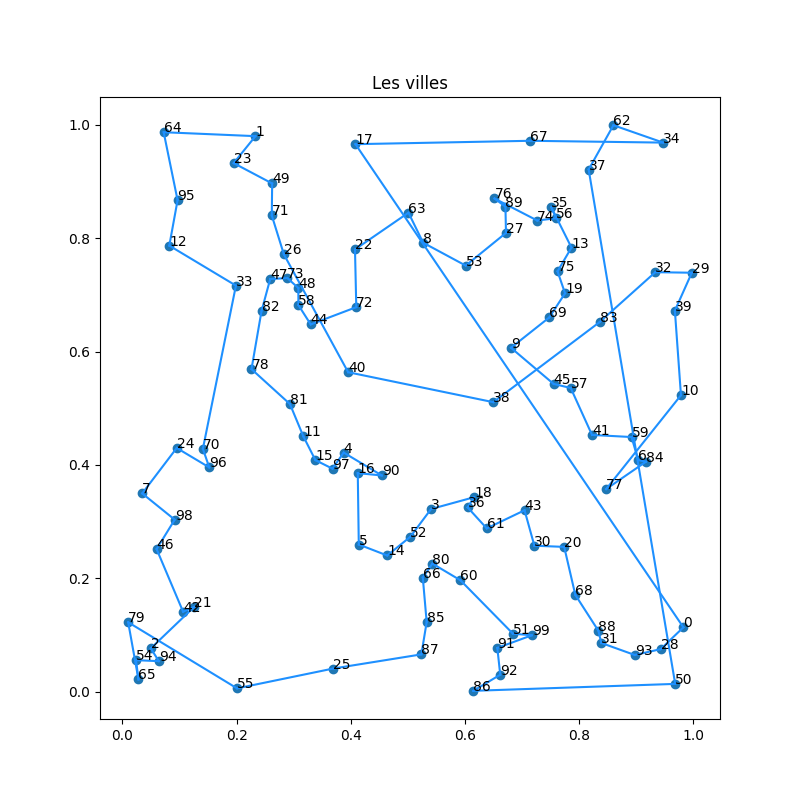

étude : chemins et cycles
Utilisation d'algorithmes gloutons pour résoudre des problèmes de cheminement.
Les différents algorithmes que nous allons voir sont pour la plupart des cas particuliers d'algorithmes plus généraux de la théorie des graphes.
Les algorithmes présentés sont de plus pas forcément les meilleurs en terme de complexité.
Le problème que nous voulons résoudre est :
Problème
étant donné un ensemble de villes $V$ décrites par leurs coordonnées GPS et un prix de construction de route proportionnelle au kilomètre comment relier les villes entres-elles au prix le plus bas ?
Par exemple les 5 villes ci-dessous :

Aucune route n'a été construite et on ne peut voyager de ville en ville.
Dans la figure ci-dessous un réseau routier a été construit. Soit toutes les routes possibles (à gauche), ce qui est pratique si ont veut voyager vite entre deux villes mais c'est beaucoup trop cher (et dangereux, regardez le nombre de croisements !) soit on a construit uniquement le nombre minimum de segments entre villes voisines pour pouvoir aller de n'importe quelle ville à n'importe quelle autre ville en suivant le réseau routier.

Nuages de points
Nous allons dans les exemples qui suivent utiliser le même jeu de données. Nous avons généré en python 100 points en deux dimensions dont les abscisses et ordonnées sont entre 0 et 1.

code python
code python
Code python pour générer les 100 villes que l'on stocke dans un dictionnaire :
import random
villes = dict()
for nom in range(100):
villes[str(nom)] = (random.random(), random.random())
return villes
Puis que l'on affiche avec matplotlib :
import matplotlib.pyplot as plt
TAILLE = 10
x = []
y = []
label = []
for nom, (long, lat) in villes.items():
x.append(long)
y.append(lat)
label.append(nom)
height = max(y) - min(y)
width = max(x) - min(x)
fig, ax = plt.subplots(figsize=(TAILLE, TAILLE * height / width))
ax.set_title("Les villes")
ax.scatter(x, y)
for i in range(len(x)):
ax.text(x[i], y[i], label[i])
for x, y in segments:
ax.plot(
[villes[x][0], villes[y][0]],
[villes[x][1], villes[y][1]],
color=mcolors.CSS4_COLORS["brown"],
)
plt.show()
Pour ce qui va suivre, une hypothèse souvent utilisée est :
L'ensemble des points est en position générale, c'est à dire que 3 points ne sont jamais alignés.
Ce n'est pas une contrainte forte puisque la probabilité que ça arrive est nulle (si on tire au hasard des coordonnées réelles aux points), et – même si ça arrivait, il suffirait de déplacer un des trois points d'epsilon pour que ça n'arrive plus.
La raison fondamentale de cette hypothèse est que :
Si $P$ est un ensemble de points en position générale, alors pour tout couple $x, y \in P$ aucun autre point de $P$ n'est sur le segment entre $x$ et $y$.
Ceci va simplifier nombre de preuves de ce qui va suivre.
Routes et Connexité
Nous devons créer un réseau routier entre les villes pour les relier. Nous avons seulement besoin de créer des segments entre villes, ce qui minimisera le nombre de kilomètres de routes.
Analysons un peu ce que nous pouvons faire.
Routes
définition
Une route entre deux villes $x$ et $y$ est soit :
- le segment entre $x$ et $y$
- soit une suite $v_1\dots v_{i-1}v_i\dots v_n$ tel que :
- $v_1 = x$, $v_n = y$
- les villes $v_{i-1}$ et $v_{i}$ sont différentes et reliées par un segment pour tout $1 < i \leq n$
- pour une route $v_1\dots v_{i-1}v_i\dots v_n$ entre $v_1$ et $v_n$ les villes $v_2$ à $v_{n-1}$ sont dites villes de passage
La notion de route s'écrit très bien sous la forme d'une relation $R$ sur un ensemble $V$ de villes. On dira que $xRy$ s'il existe une route entre $x$ et $y$. Cette relation est une relation d'équivalence car elle est :
- réflexive $xRx$ (le singleton $x$ permet de relier $x$ à lui-même)
- symétrique $xRy$ implique $yRx$ (les routes sont à double sens)
- transitive $xRy$ et $yRz$ implique $xRz$ (on colle la suite allant de $x$ à $y$ à la suite allant de $y$ à $z$)
L'intérêt de cette formalisation est qu'elle montre que la relation des routes $R$ se crée :
- en considérant la relation $S$ des segments du réseau routier ($xSy$ s'il existe un segment entre $x$ et $y$ dans le réseau)
- en fermant cette relation par transitivité
À première vue créer $R$ à partir de $S$ semble compliqué, mais l'exercice ci-après (qui explicite l'algorithme de Algorithme de Roy) montre qu'on peut le faire très simplement en utilisant le principe de la programmation dynamique.
Soit $V = \{ v_1, \dots v_n \}$ les villes d'un réseau routier et $S$ sa relation segment associée.
Montrez que si on note $V_i \{ v_1, \dots v_i \}$ les routes ayant comme villes de passage uniquement des éléments de $V_{i}$ peuvent de déduire des routes routes ayant uniquement des villes de $V_{i-1}$ comme villes de passage.
corrigé
corrigé
Il existe une route entre $x$ et $y$ ayant comme ville de passage uniquement des éléments de $V_{i}$ si :
- soit il existe une route entre $x$ et $y$ ayant comme ville de passage uniquement des éléments de $V_{i-1}$
- soit il existe les deux routes suivante :
- une route entre $x$ et $v_i$ ayant comme ville de passage uniquement des éléments de $V_{i-1}$
- une route entre $v_i$ et $y$ ayant comme ville de passage uniquement des éléments de $V_{i-1}$
Déduire de l'exercice précédent un algorithme en $\mathcal{O}(n^3)$ permettant de trouver la relation routes à partir de la relation segment.
corrigé
corrigé
On utilise la représentation matricielle des relations. On dira que $S[i][j]$ (resp. $R[i][j]$) est vrai s'il existe un segment (resp. une route) entre $v_i$ et $v_j$ dans le réseau et que $S[i][j]$ (resp. $R[i][j]$) est faux sinon.
L'équation précédente s'écrit alors :
$R_k[i][j]$ est vrai si l'une ou l'autre des assertions suivant est vrai :
- $R_{k-1}[i][j]$ est vrai
- $R_{k-1}[i][k]$ et $R_{k-1}[k][j]$ sont vrais
Qui se résume en :
$$
R_k[i][j] = R_{k-1}[i][j] \text{ ou } (R_{k-1}[i][k] \text{ et } R_{k-1}[k][j])$$
Ce que l'on peut écrire en ré-écrivant sur la même relation :
for i in range(n):
for j in range(n):
R[i][j] = S[i][j]
for k in range(n):
for i in range(n):
for j in range(n):
R[i][j] = R[i][j] or (R[i][k] and R[k][j])
Connexité
Le but final est d'obtenir un réseau routier où l'on puisse librement aller d'une ville à l'autre. Formalisons ceci en commençant par étudier des réseau routiers déjà constitués
Un réseau routier de villes est connexe si quelque soient deux villes $x$ et $y$, il existe une route entre $x$ et $y$.
Le fait que la notion de route (la relation $R$ de la partie précédente) soient une relation d'équivalence montre que le réseau routier est connexe si et seulement si cette relation n'admet qu'une seule classe d'équivalence ($R(x) = R(y)$ quelques soient les villes $x$ et $y$).
définition
Si $R$ est une relation d'équivalence sur $V$, la classe d'équivalence de $x \in V$ est :
$$
R(x) = \{ y | xRy, y \in V \}
$$
Si un réseau routier n'est pas connexe, les classes d'équivalences de la relation route donnent les composantes connexes du réseau routier. Le réseau routier de la figure suivante contient 2 composantes connexes :

Notez que :
Si $V_1$ et $V_2$ sont deux composantes connexes d'un réseau routier alors :
- $V_1 \cap V_2 = \emptyset$
- si on ajoute un segment entre une ville de $V_1$ et une ville de $V_2$, alors $V_1 \cup V_2$ devient une composantes connexe du nouveau réseau
Par exemple, en ajoutant le segment de route entre B et P, on obtient un réseau routier connexe :

La propriété ci-dessus nous permet de créer un algorithme glouton permettant de trouver toutes les parties connexes d'un réseau routier uniquement à partir de sa relation segment.
Algorithme composante connexe :
pour chaque ville v : R(v) = v
pour chaque segment (x, y):
si R(x) ≠ R(y):
pour chaque ville z telle que R(z) = R(y):
R(z) = R(x)
Lorsque l'on code l'algorithme il arrive souvent que l'on écrive changement de marques :
pour chaque ville u:
si R(u) == R(x) alors:
R(u) = R(y)
Qui est faux.
Pourquoi est-ce faux ?
solution
solution
Si u vaut x, on change sa marque et plus aucun changements ne sera effectué pour les villes suivantes.
Il faut stocker la valeur test :
à_changer = R(x)
pour chaque ville u:
si R(u) == à_changer alors:
R(u) = R(y)
Cet algorithme fonctionne grace à la marque R qui défini le représentant de chaque ville. Montrons ça sur un exemple en reprenant le réseau ci-après et en affectant une couleur à chaque ville comme représentant :

Et en étudiant les segment dans l'ordre $(L, S)$, $(B, M)$, $(P, S)$ et enfin $(L, P)$ on obtient :

Notez que l'étude du segment $(L, P)$ ne produit aucun changement dans les représentants car la couleur de $L$ est déjà égale à la couleur de $P$.
A la fin de l'algorithme composantes connexes les villes ayant même valeur de $R$ forment une composante connexe.
preuve
preuve
On le prouve par récurrence sur le nombre de segments examinés :
Apres $k$ segments examinés, les villes ayant même valeur de $R$ forment une composante connexe.
- Lorsqu'il n'y aucun segment examiné chaque ville a un représentant différent ce qui représente bien les composantes connexes
- À chaque fois que l'on ajoute un segment :
- soit les deux villes ont même représentant et l'hypothèse de récurrence stipulent qu'ils sont dans la même composante connexe
- soit les deux villes ont un représentant différent et l'hypothèse de récurrence stipulent qu'ils sont dans dux composantes connexes différentes. L'ajout du segment regroupe les deux composantes en une seule composante, ce que l'on fait en leur associant un même représentant
Montrez qu'il ne peut y avoir plus de $n-1$ fois où la ligne 3 de l'algorithme est vérifiée.
corrigé
corrigé
À chaque fois que la ligne 3 de l'algorithme est vérifiée on regroupe deux composantes connexes. Or au départ il y en a $n$ et à la fin il ne peut y en avoir au minimum 1.
En déduire que la complexité d l'algorithme est en $\mathcal{O}(n^2)$
corrigé
corrigé
Il y a au pire $\frac{n(n-1)}{2}$ segments (un pour chaque couple) et la condition de la ligne 3 n'est vrai qu'au maximum $n-1$ fois.
Création de réseau routier
définition
- le coût de construction d'un segment entre deux villes $x$ et $y$ est $K \cdot d(x, y)$ où $d(x, y)$ est la distance entre les coordonnées géographiques de $x$ et de $y$
- le coût de construction d'un réseau routier est la somme des coûts de constructions des segments qui le composent.
On peut maintenant reformuler notre problème d'optimisation :
Problème
Trouver un réseau routier de coût de construction minimum pour notre ensemble de villes.
L'analyse préliminaire précédente nous permet d'aborder sereinement ce problème d'optimisation. On peut utiliser l'algorithme "composante connexe" en choisissant l'ordre dans lequel examiner les segments.
Cet ordre semble évident puisque l'on veut minimiser le coût : on examine les segments par coût croissant.
Commençons par écrire cet algorithme, initialement proposé par Kruskal
trie des segments par distance croissante
pour chaque ville v : R(v) = v
pour chaque segment (x, y) dans l'ordre du tri :
si R(x) ≠ R(y):
ajoute (x, y) aux segments choisis
pour chaque ville z telle que R(z) = R(y):
R(z) = R(x)
L'étude précédente nous indique d'ores et déjà que :
- on choisira exactement $n-1$ segments
- le reseau routier formé des segments choisis sera connexe
Pour nos 100 villes, on trouve :

code python de l'affichage
code python de l'affichage
On suppose que l'algorithme de Kruskal nous rend une liste segments dont les éléments sont des couples $(v1, v2)$ avec $v1$ et $v2$ des noms de villes.
Pour les prendre en compte dans le graphique, il faut créer des segments de coordonnées utilisable par la fonction plot.
On en a aussi profité pour changer de couleur en utilisant cette documentation
import matplotlib.pyplot as plt
import matplotlib.colors as mcolors
TAILLE = 10
x = []
y = []
label = []
for nom, (long, lat) in villes.items():
x.append(long)
y.append(lat)
label.append(nom)
height = max(y) - min(y)
width = max(x) - min(x)
fig, ax = plt.subplots(figsize=(TAILLE, TAILLE * height / width))
ax.set_title("Les villes")
ax.scatter(x, y)
for i in range(len(x)):
ax.text(x[i], y[i], label[i])
for x, y in segments:
ax.plot(
[villes[x][0], villes[y][0]],
[villes[x][1], villes[y][1]],
color=mcolors.CSS4_COLORS["brown"],
)
plt.show()
Avant de montrer que l'algorithme de Kruskal est optimal, commençons par montrer une propriété intéressante de ce réseau :
Propriété
Le réseau routier donné par l'algorithme de Kruskal ne contient pas de cycle.
preuve
preuve
S'il contenait un cycle, lors de l'ajout du dernier segment $(x, y)$ on aurait $R(x) = R(v)$ ce qui est impossible.
Montrons que l'algorithme est bien optimal :
L'algorithme de Kruskal produit un réseau de construction connexe à coût de construction minimal.
preuve
preuve
L'algorithme de Kruskal est un algorithme glouton, prouver son optimalité se fait en utilisant les techniques du cours.
- On suppose que l'algorithme n'est pas optimal
- On se donne une solution optimale qui coincide le plus longtemps possible avec la solution donnée par l'algorithme glouton
- on prouve que l'on peut échanger un élément de la solution optimale par le choix du glouton pour forger une solution optimale coïncidant plus longtemps avec celui-ci
- contradiction
Soit $[s_1, \dots, s_{n-1}]$ la liste des segments choisis dans cet ordre par Kruskal. On suppose que ce n'est pas optimal et qu'il existe un réseau routier de coût de construction strictement plus petit.
Parmi tous les réseaux optimaux, on en choisit un qui coincide le plus longtemps possible avec notre algorithme glouton : $[s'_1, \dots, s'_m]$
On commence par remarquer que :
- $m \geq n-1$ sinon le réseau ne peut être connexe
- si $s_i = s'_i$ pour $1\leq i \leq n-1$ alors le réseau optimal ne l'est pas puisque la solution donnée par Kruskal est connexe.
Les deux remarques précédentes nous indiquent qu'il existe $1 \leq i^\star < n-1$ tel que :
- $s_i = s'_i$ pour $1\leq i < i^\star$
- $s_{i^\star} \neq s'_{i^\star}$
Notons $s_{i^\star}=(x, y)$. Si l'on supprime $s_{i^\star}$ du réseau obtenu par Kruskal, on déconnecte le réseau en 2 composantes connexes $X$ et $Y$ avec $x \in X$ et $y\in Y$. Tout chemin du réseau de Kruskal reliant une ville de $X$ à une ville de $Y$ contient ainsi le segment $(x, y)$
En considérant une route reliant $x$ à $y$ dans le réseau optimal, il existe forcément un segment $(u, v)$ tel que $u \in X$ et $v \in Y$. Par construction, ce segment ne peut être dans la solution obtenue par l'algorithme de Kruskal. De plus lors du choix de $s_{i^\star}$, on avait $R(u) \neq R(v)$ (sinon il existerait une route reliant $u$ à $v$ pour le réseau de Kruskal ne passant pas par $(x, y)$ ce qui est impossible) : si l'algorithme a choisi $(x, y)$ plutôt que $(u, v)$ c'est que $d(u, v) \geq d(x, y)$.
Enfin, si l'on supprime le segment $(u, v)$ du réseau optimal, on le déconnecte en 2 parties $U$ et $V$ avec $u, x \in U$ et $v, y \in V$.
On peut alors échanger le segment $(u, v)$ et $(x, y)$ pour obtenir :
- un réseau connexe
- de coût inférieur
Ce qui est une contradiction puisque le nouveau réseau coïncide plus longtemps avec celui obtenu par Kruskal.
Le réseau obtenu par l'algorithme de Kruskal est optimal ! Il a alors la propriété de ne pas contenir de croisements (de segments qui s'intersectent).
Un réseau routier de coût de construction minimal n'a pas d'intersection de segments
preuve
preuve
Supposons que le segment $(u, v)$ croise le segment $(x, y)$ dans une solution optimale. On se retrouve alors dans le cadre de la figure ci-dessous :

Avec $uxvy$ qui forme un quadrilatère convexe.
En supprimant le segment $(x, y)$ du réseau on déconnecte $x$ de $y$. Les deux villes $u$ et $v$ se retrouvent alors dans la même composante connexe, disons celle de $y$. En supprimant ensuite le segment $(u, v)$ on déconnecte $u$ de $v$ et on peut supposer sans perte de généralité que $y$ se retrouve dans la composante connexe de $v$.
On en conclut que les 3 segments $(x, u)$, $(x, v)$ et $(y, u)$ ne font pas partie du réseau et qu'an supprimant les segments $(x, y)$ et $(u, v)$ de celui-ci on obtient 3 composantes connexes :
- la composante connexe $A$ contenant $x$
- la composante connexe $B$ contenant $u$
- la composante connexe $C$ contenant $y$ et $v$

Le quadrilatère $uxvy$ étant convexe, on a que $d(x, y) + d(u, v) > d(x, v) + d(u, y)$ et donc en ajoutant les segments $(x, v)$ et $(u, y)$ on reconnecte le réseau et il est de coût strictement inférieur.
Chemins
Le réseau de coût de construction minimal est connexe et ne contient pas de cycle. Il n'existe donc pour chaque couple de ville qu'une unique route.
En utilisant la méthode du backtracking (on va le plus loin possible et dès que l'on se retrouve dans une impasse on rebrousse chemin), décrivez un algorithme permettant de trouver dans un réseau de coût de construction minimal la route entre deux villes $x$ et $y$
corrigé
corrigé
L'idée est de partir de $x$ et de progresser de proche en proche par des segments jusqu'à :
- soit trouver $y$
- soit se retrouver bloqué
Si l'on est bloqué en revient en arrière pour choisir un autre segment.
L'algorithme s'appelle parcours en profondeur et est récursif.
def routes_rec(précédent, courant, y, segments):
for u, v in segments:
if v == courant:
u, v = v, u
if (u, v) == (courant, précédent):
continue
elif (u, v) == (courant, y):
return [v]
elif u == courant:
fin_chemin = routes_rec(u, v, y, segments)
if fin_chemin != None:
fin_chemin.append(v)
return fin_chemin
Pour que tout fonctionne sans soucis, il ne faut pas oublier de vérifier que l'on ne revient pas en arrière.
On utilise alors ce parcours en initialisant la récurrence :
routes = routes_rec(None, origine, destination, segments)
On affiche le chemin entre les villes 0 et 1 de l'exemple :

Cycles
Le réseau routier de coût de construction minimum est parfait pour relier les villes à moindre coût. En revanche, il n'est pas robuste aux pannes ou au blocage. Un seul segment de bloqué et le réseau n'est plus connexe.
L'idée est alors de chercher un cycle reliant toutes les villes. Pour tout couple de ville, il existe alors deux routes disjointes permettant de les relier.
Ce problème est cependant souvent vu sous un autre angle, celui d'un voyageur de commerce voulant visiter toutes les villes :
Problème du voyageur de commerce
Étant donné un ensemble de villes, trouver l'itinéraire le plus court passant par chaque ville une et une seule fois.
Sous la forme d'un problème d'optimisation on cherche, pour un ensemble de villes $V$ donné, un cycle $v_1 v_2\dots v_1$ passant par toutes les villes 1 fois minimisant la quantité :
$$
\sum_{i=1}^nd(v_i, v_{i+1}) + d(v_n, v_1)
$$
Combien de solutions possibles possède un problème du voyageur de commerce à $n$ villes ?
Solution :
Solution :
Pour un départ fixé, une permutation des $n - 1$ villes restante produit une solution. Comme la permutation opposée revient à parcourir le cycle dans l'autre sens, il y a $\frac{(n-1)!}{2}$ solutions possibles.
Pour nos 100 ville, cela fit de l'ordre de $4.66\cdot 10^{155}$ solutions possibles.
Algorithme glouton
Le nombre astronomique de solutions possibles nous empêche de toutes les essayer. De plus, on peut montrer (nous ne le ferons pas ici) qu'il est illusoire de trouver une solution exacte (du moins pendant une séance de code) car le problème du voyageur de commerce est NP-complet (plus précisément NP-difficile, mais ne chipotons pas).
Couramment, l'algorithme glouton utilisé pour approximer ce problème est :
- choisir une ville de départ qui constitue le départ du chemin
- tant que toutes les villes n'ont pas été ajoutée au chemin : on ajoute la ville la plus proche du dernier élément du chemin.
Pour notre exemple, on trouve, en partant de la ville $0$ (la dernière ville traversée est la $17$):

Coût de construction de : 10.475838825929351
On voit bien que l'algorithme n'est pas vraiment optimal...
Exhibez un exemple simple pour lequel l'algorithme glouton ne trouvera jamais la solution optimale.
Solution
Solution
En utilisant la distance euclidienne, l'algorithme glouton ne trouvera jamais la bonne solution pour les 6 points de la figure suivante :

Optimisation
La représentation graphique de la solution montre de nombreux croisements, ce qui prouve que notre solution est bien améliorable :
Proposition
Une solution du problème du voyageur de commerce n'a pas de croisements.
preuve
preuve
Supposons qu'un cycle comporte un croisement. On peut alors sans perte de généralité considérer que l'on est dans le cas ci-après :

Le quadrilatère $xvyu$ est alors convexe et en supprimant les segments $(x, y)$ et $(u, v)$ on obtient les composantes connexes $A$ et $B$.
Le cycle ci-après, obtenu en changeant les diagonales du quadrilatère par deux de ses côtés, est alors strictement meilleur :

C'est l'idée sous-jacente de la méthode d'optimisation 2-opt :
- trouver un cycle potentiel
- chercher un croisement et le supprimer
- retour en 2
On peut itérativement chercher les croisements jusqu'à leur disparition complète, ou prendre un certain nombre de couples de segments et le d2croiser si nécessaire. C'est cette dernière façon de faire qui est privilégiées pour de grands cycles.
Par exemple ci-dessous, on a décroisé les segment $(0, 17)$ et $(37, 50)$ :

Notre cycle étant très petit, on peut se permettre de faire tous les cas. La figure suivante montre le résultat de 100 itérations de tous les cas possibles (on exécute 100 fois un test de tous les décroisements possibles) :

Coût de construction de : 8.606090557637186
C'est bien mieux, et il n'y a plus de croisements.
Sans croisement ne veut pas forcément dire optimal !
Algorithmes à performances garanties
L'algorithme glouton précédent ainsi que son optimisation ne garantissent rien sur la solution. Il existe cependant des algorithmes heuristiques dont on peut garantir la performance.
On peut commencer par donner une borne min du coût du voyageur de commerce :
Montrer que le coût du voyageur de commerce est plus grand que le coût du réseau connexe optimal
preuve
preuve
Le cycle est est réseau connexe, son coût est donc forcément plus important.
Du réseau au cycle
L'idée est de reprendre le réseau optimal et de le parcourir entièrement en suivant ses sommets. Par exemple, en considérant le réseau ci-dessous :

On peut le parcourir en suivant ses segments de cette façon par exemple :

Ce qui donne le cycle :
$$
[1, 2, 3, 2, 4, 2, 1, 5, 1, 6]
$$
Il parcours 2 fois le réseau son coût est donc de deux fois le coût du réseau connexe optimal.
En supprimant les sommets déjà parcourus, on obtient le cycle :
$$
[1, 2, 3, 4, 5, 6]
$$
Montrez qu'une adaptation de l'algorithme du parcours en profondeur utilisé dans la partie sur le calcul des routes permet de trouver un parcours.
corrigé
corrigé
Si l'on supprime la condition d'arrêt de la ligne 8 de l'algorithme, il va parcourir tout le réseau.
On peut alors construire petit à petit le parcours en stockant la ville dans le parcours la première fois qu'on la voit.
Ceci donne :
def parcours_rec(précédent, courant, segments, parcours):
if courant not in parcours:
parcours.append(courant)
for u, v in segments:
if v == courant:
u, v = v, u
if (u, v) == (courant, précédent):
continue
elif u == courant:
parcours_rec(u, v, segments, parcours)
Qu'on exécute avec les commandes :
parcours = []
parcours_rec(None, une_ville, segments, parcours)
Le coût de ce parcours est plus faible que le parcours précédent (on a une distance, donc elle respecte l'inégalité triangulaire). On en conclut que :
propriété
Le coût du cycle issu du parcours du réseau optimal est au pire deux fois plus grans que le cycle optimal.
Le parcours donne, sur nos 100 villes :

Coût de construction de : 10.608836994373258
Ce qui après optimisation (100 passes) devient :

Coût de construction de : 8.596669623756684
Algorithme de Christofides
L'algorithme de Christofides est une amélioration de l'algorithme précédent. On peut montrer qu'il est au pire 1.5 fos plus mauvais que le cycle optimal.
C'est d plus la meilleure approximation connue.